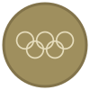

Badges basket — palette réduite
Moins de couleurs = plus lisible. La couleur encode juste la catégorie, pas chaque trophée.
Doré — titres collectifs & HOF (Champion NBA/NCAA, JO, EuroLeague, HOF)
Bleu — distinctions individuelles (MVP, All-Star, DPOY, ROTY, All-NBA…)
Couleur fac — maillot retiré
A — Chips pleins (recommandé)
2 couleurs + couleur fac. Le glyphe distingue le trophée, la couleur dit juste la catégorie.
HOF
NBA ×6
NCAA ×2

Or JO ×2
EuroLeague
MVP ×5
All-Star ×14
DPOY
ROTY
#3 retiré
D — Chips outline (ghost)
Mêmes 2 couleurs, fond transparent. Plus léger.
HOF
NBA ×6
NCAA ×2
MVP ×5
All-Star ×14
DPOY
E — Chips dégradés
Deux dégradés seulement (un par catégorie).
HOF
NBA ×6
NCAA ×2
MVP ×5
All-Star ×14
B — Médaillons (icône seule, détail au survol)
HOF
Champ NBA
Champ NCAA
MVP
All-Star
DPOY
F — Timbres carrés + compteur en coin
6
2
5
14
H — Pastille ronde + compteur en exposant
14
6
5
I — Texte seul (badges sans logo)
All-NBA, All-American, NCAA MOP, meilleur marqueur… → chip texte sobre, neutre.
All-NBA
All-American
NCAA MOP
Top scorer NCAA
Naismith POY
J — Bannière "maillot retiré" (couleurs de la fac)
L — Icônes nues (ultra compact)
Pas de fond, juste les glyphes aux 2 couleurs.
K — Assets réels (médailles 5-anneaux + logo HOF)
Vrais fichiers de badges/ : médailles à la géométrie + couleurs officielles CIO, anneaux éclaircis.
Carte joueur — comparatif
Michael Jordan — chips (palette réduite)
SG · USA · North Carolina 1981-1984 · #3 — Chicago Bulls, 1984
HOF
NBA ×6
NCAA 1982
Or JO ×2
MVP ×5
All-Star ×14
DPOY
#23 retiré
Michael Jordan — icônes nues
SG · USA · North Carolina 1981-1984 · #3 — Chicago Bulls, 1984
Reggie Jackson — peu de badges
PG · USA · Boston College 2008-2011 · #24 — OKC, 2011
NBA